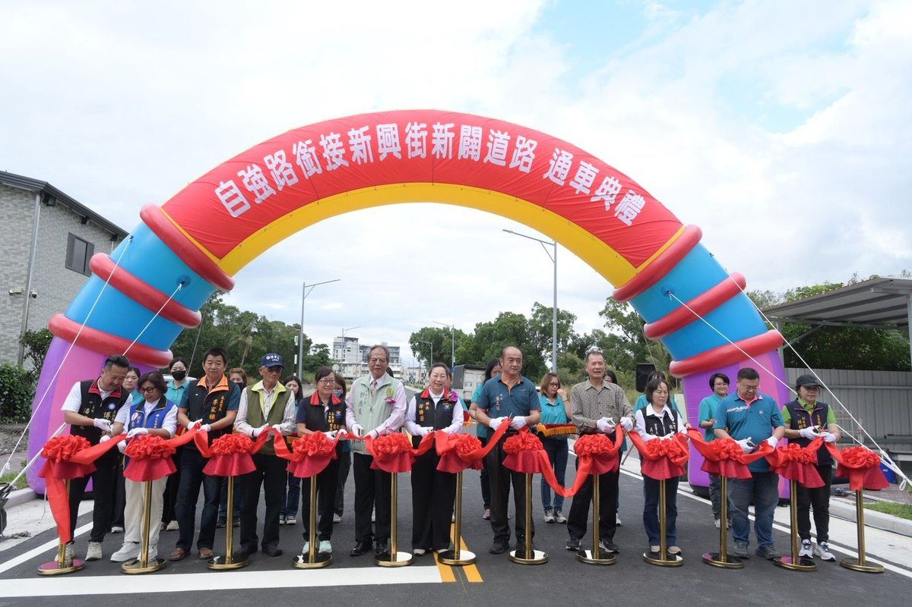

玉里自強路銜接新興街通車 打造行政中心新格局

可樂電子報小編/編輯
玉里鎮自強路銜接新興街新闢道路，於今(16)日舉行通車典禮，縣長徐榛蔚受邀與現場貴賓共同剪綵，宣告道路正式通車。這條道路從規劃、用地取得到工程推動，歷經多方協調與克服各項困難，終於順利完成，也是玉里鎮城市發展的重要里程碑，為未來公共建設、行政服務及生活機能拓展，開啟嶄新的發展空間。

「若要人民富，就要先開路！」縣長徐榛蔚表示，一個城市的經濟發展，便利的交通基礎建設是關鍵，這一條新道路帶來的第一項重要效益，就是為玉里鎮行政中心的發展預作準備，她也支持未來合署辦公大樓的興建，將整合分散的行政機關與公共服務空間，提供民眾更便利的一站式洽公環境。

玉里鎮長龔文俊指出，新闢道路從最初構想到實際推動，過程並非一帆風順，涉及土地取得、工程規劃、經費籌措及各項行政協調，每一個環節都需要耐心溝通與持續努力。儘管過程艱辛，公所團隊仍一步一步克服困難，讓原本停留在規劃階段的建設，逐漸化為具體成果。今天道路正式通車，最重要的意義，就是讓地方發展不再受限於既有道路與空間條件。

玉里鎮公所說明，在交通安全與民眾日常生活方面，新闢道路更具有實質意義。過去玉里鎮部分交通流量集中於中華路，尖峰時段容易形成車流壓力，尤其當公務車輛、民眾洽公車流及大型活動人潮集中時，交通負擔更加明顯。新道路通車後，可增加區域間的通行選擇，分散部分車流，減輕中華路交通壅塞問題。

其中，緊急救護動線的改善更是地方居民高度關注的課題。過去受到道路路網及交通狀況限制，救護車在部分時段通行容易受到影響，對於分秒必爭的緊急醫療救援而言，交通便利性攸關生命安全。新闢道路提供另一條重要通行路徑，未來配合整體道路網絡完善，將有助於提升救護車及緊急應變車輛的通行彈性，讓緊急救援多一條選擇、多一分保障。
🌟 掌握花蓮在地第一手資訊・歡迎訂閱追蹤
深度紀實報導、在地精采影音專題，第一時間接收最新消息！